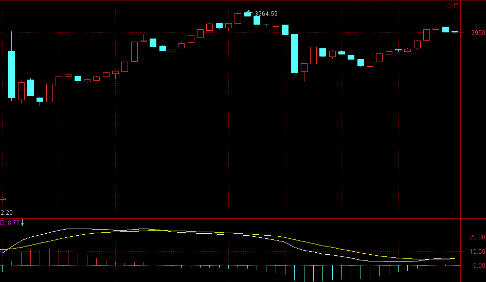

(2007-04-27 08:42:51)
51前都说股票了，51后再恢复正常，继续解〈论语〉还有诸如419、体液之类的东西。
今天说点实际的问题，因为，什么理论，最终都要落实到操作。而操作中一些细节问题，是必须要搞清楚的。
首先，你无论如何都应该能看到走势图，至于最小只能看到1分钟还是分笔图，甚至连5分钟都看不到，这问题都不是太大。
其次，只要是正常的软件，没有不能看MACD的，有一个很重要的问题，很多人搞不清楚，就是怎么选择看几分钟的MACD。必须明白一个道理，就是MACD的计算方法决定了，1分钟和30分钟MACD之间并没有实质的区别，只是计算的周期不同而已，而相应的计算是线性的，只是稍微灵敏与迟钝的区别，没有太大的区别。
问题的关键是，MACD只是力度比较的辅助，因此，是先定好比较哪两段走势，然后才去选择看是1分钟的还是30分钟的更适宜辅助判断（关系到灵敏度），例如，两段走势，在1分钟上形成很复杂的MACD柱子和黄白线变化，而在30分钟上是很明显的两个柱子面积以及标准的黄白线变化，那当然就选择用30分钟看。【韶山映山红】一般来说，1分钟走势的MACD在5分钟图上看，如果灵敏度还是太高而无法判断，就看30分钟图上的。】
虽然由于MACD与K线价格相关，所以一般情况下，30分钟级别的走势变化，经常对应在30分钟的MACD上，【韶山映山红】这个时候的走势级别，差不多是图上线段的级别对应MACD的黄白线翻转。图上笔的级别对应MACD柱子的翻转。】但这不能因此而改变先根据中枢与走势运动的分析，然后选出需要比较力度的走势段，最后才用MACD辅助判断的顺序原则。
【韶山映山红】若禅精舍（陈秋明）：
背驰的比较，macd只是工具之一，对于缠论原文来说，由于macd提及的比较多，所以很多人好像把背驰和macd联系在一起，其实二者并没有什么直接关系。要比较背驰，首先要有两段走势才能比较，而这两段走势必须是相同级别，一个五分钟下跌趋势和一个月线下跌趋势是无从比较的。其次，用来比较的两段走势，都是围绕某个基点展开的，至于这两段走势是否同一个方向倒并不重要，但一定是有一个中心点，背驰的比较就是这中心点两段的同级别走势。而这中心点，可以是下跌加上涨的那个转折点，也可以是一个同级别走势类型，也可以是一个更大级别中枢，是相对这个中心点而言，前面一段走势从开始到该中心点位置，以及后面一段走势从中心点离开的走势，这二者相对比，并且一定是完成了的走势类型才有比较的意义，否则走势当下还没有完成，这段走势的力度还没有明确，那还比较什么？
所谓背了又背，最常见的就是对走势结构的生长不清楚，将一个当下还没有完成的走势类型，去和前面已经完成的走势类型对比力度，同时又把背驰等同于macd指标背驰。这样一来，很多走势进入背驰段的时候，就认为该走势段背驰了，后面继续新低就认为背驰失效、背了又背，其实是该走势在当下并没有结束而已，小级别的继续延伸，完全可以使已经进入背驰段的走势变得不背驰。
而走势的完成，就要对各种走势类型很熟悉，以及对走势必完美有更深入的理解才可以。
上图，从82开始，是一个一分钟级别走势类型的生长，可以看到，83-88构成一个一分钟中枢A，而从88开始的向上离开段，要对比的就是82-83，83-88就是用来比较背驰的两段走势的中心点，88-89的力度，对比82-83是背驰段，89还是个区间套背驰点，在“背了又背”的视角里，这就是背驰了，但89后面的回调并没有破坏88开始的线段，而是在一分钟层面上继续向上延伸，最终使得88开始的线段，对比82-83并不背驰。
这是用线段来举例的图示，放在走势类型上，道理和逻辑是相同的。例如一分钟离开段当下是a+A结构，相比前面的一分钟走势段是背驰段，但这个离开段的A完全可以再出一个第三买点后继续上涨，使背驰段不成立，这在市场走势中是很常见的。而A是否能够走出第三买点，这根本无需预测，看当下小级别力度，以及中枢A的次级别走势力度就可以把握了。
】
以上是些小的技术细节，但更重要的，是一些操作心理上的细节。
操作上，最开始，一定都是患得患失的。为什么一定要把理论搞清楚？就是先从根子上解开自己的疑惑，知道为什么本ID的理论是如几何般严格精确的，否则，例如你对平面三角形内角之和为180度的证明有疑惑，一定要去丈量每一个平面三角形去证明才舒服，这样，就永远有心理阴影，是无法去进行正常操作的。
理论的探讨，是为了树立操作的信心，当然，还为了对走势有一个精确的分析去指导操作，但其心理层面的意义也是极为重要的。这绝对不能迷信，因为相信本ID而相信本ID的理论，那就是绝对的脑子进水了。而是要从道理、逻辑等方法彻底搞清楚，这样才能无疑地去操作，而不用瞻前顾后。【韶山映山红】知其然，知其所以然，然后才能运用自如。】
【韶山映山红】若禅精舍（陈秋明）：
“学如不及，犹恐失之”，所谓“干货”其实一点用都没有，如果只是知道一些技巧性的东西，而不明了这种技巧性的本来，那就又回到经验总结这条路上来了。
其次，“依义不依语、依法不依人”，因为相信本ID而相信本ID的理论，那就是绝对的脑子进水了。语言有着不可避免的不可完备处，是指向月亮的手指，而对于一个不知道月亮是何物的人，再如何对月亮进行描述都是白费力气，只有想办法让他亲眼看一眼月亮才能知道，作为读者，应该是根据其手指而去发现月亮的所在，多少人把手指当成了月亮。
而我们所能相信的，只能是经过我们自己思考后，确认其逻辑无误的结论，至于这结论是谁说的其实并不重要。人们习惯于以身份、成就、头衔等表象去判断一个人是否可信，判断一个人说的事情是否可信，这只是大脑本能的偷懒做法而已。
】
对本ID理论对走势分析以及操作的绝对性有把握后，以后解决的都是一个操作精确度的问题。
一个正确的理论，应用到实践中，特别是面对瞬息万变的市场，因为应用的人的经验与心理状态，其结果自然有很大差异。如何提高操作的精确度，就是一个长期实践的问题。
但无论如何，只有在操作中才能解决这个问题，否则永远都在纸上谈论，那是毫无意义的。
一个最常见的心理就是，看到是买点或卖点了，但买了还跌、卖了还涨，所以下次就不敢尝试了。这在操作不熟练的人中，太正常了。因为，对买卖点的判断，开始时，一定都达不到理论所确立的精确度。
毕竟是人，人总有盲点与惯性。例如对于习惯性多头来说，经常就是买早卖晚；而习惯性空头，就是买晚卖早。就算对理论在认识上没问题了，这种习惯性因数也会导致真正的操作与理论所要求的操作时间有偏差。要改变这种习惯性力量，不可能是一天两天的事情。
【韶山映山红】若禅精舍（陈秋明）：
对习惯的改变，是最困难的，这属于习气的范畴。而且可以断言，这种改变不可能通过临盘的操作练习来实现。当然很多人还根本没有意识到这个问题，那就只能等意识到了再说，生命本身会自寻出路，真的认识到这个问题了，如果有足够的欲望，自然会想尽办法去解决，那是另外一片天地了。
】
一般来说，应用理论开始实际操作前，要先看懂所有曾有的走势，能用理论对已有的走势进行分析，如果这都达不到，那当下去操作一定乱。【韶山映山红】复盘都不行，当下更没戏。】
这一步基础达到后，可以先不用真正买卖，可以进行一定的模拟，市场一周5天开着，当下去模拟操作，每次的操作都记录下来，然后不断根据后面的走势来总结，然后发现自己对理论当下理解上的问题，不断修正。
当模拟操作有足够把握后，才开始真正的买卖操作。
如果一开始就真正买卖，由于绝大多数人，在真的钱上都会方寸大乱，无论操作成功、失败，都会迷失上输赢上，而忽略了操作上的问题。
所以，首先要把静态的、已有的图形分析清楚，然后在进行动态的、当下的分析把握，最后才是实际的操作，这样就比较稳妥了。
当然，这过程不是一两天完成的，所以，本ID在12月下旬开始就说了些股票，当时是让各位学习时，能安心，买了就扔那里，边赚钱边学习，本ID不需要各位的学费，但各位实际操作的时候，可能会交给市场一些学费，本ID告诉点股票让各位拿着，就是把可能要交给市场的学费都给各位准备好了，因为，毕竟最后都要靠各位自己，而在市场上学习，先教点学费，然后不断进步，最后应用自如，都是很正常的过程。
【韶山映山红】若禅精舍（陈秋明）：
静态图形能够几秒内看懂，是临盘实操的基础，这需要长期的对静态图形的分析积累，一般来说，从一分钟走势类型或线段开始递归到30分钟走势类型，这样的递归持续下去，自然而然就可以看懂所有静态图形，但这是一个不知道终点什么时候到来的事情，所以绝大多数人都不会看到终点。对缠论技术来说，个人从来不认为有必要去藏什么私，想到哪里就写到哪里，写是一种习惯和爱好，仅此而已，至于“教会学生，饿死师父”这种低级而羸弱的思维方式，从来都是让人恶心的逻辑。这种理论，从对人的要求上，本身就筛掉一大批人了，剩下来的寥寥无几，说白了就是反正也没几个人能掌握，藏私的意义是什么？
】
所以心态要平稳点，不要整天去计算今天少挣多少诸如此类的问题，说白了，如果你没有一套有效的方法，只要你在市场里，你赚的钱从本质上就不是你的，只是暂时存在你那里。而要把自己培养成一个赚钱机器，就如同前锋把自己培养成射门机器一样，方法学了都会，但神射手却不一定都是，这需要更多的努力。
市场的技术，是需要磨练的。关键是真正掌握技术，只要掌握了，赚钱就成了自然的事情，只要有足够的时间，就自然产生足够的钱，为什么？因为这已经被本ID的理论如几何般严密地保证了。
【韶山映山红】若禅精舍（陈秋明）：
坚持做正确的事情，把利润交给时间，这是所有成功者的共性。而人向来是最有意思的，我们想要什么，就必然要去放弃一些什么，同时也要付出一些什么，大多数人什么都想要，最后什么都得不到，只有少数人明确知道自己的目的，并且愿意为此付出与放弃，这样才保证了人类社会的金字塔结构。这在和平时期其实并不太明显，因为大环境的缘故，生存都不成问题，最多是生活成本的困扰，如果是在乱世，那人和人的区别会更加明显。
对缠论来说，在理论之上可以任意嫁接其他任何理论，在熟悉缠论的基础上，那些其他的任何理论都可以起到锦上添花的作用，但添花的基础是要有锦。就好像板块轮动相关知识的掌握，必须建立在买卖点可以熟练掌握的基础上一样，否则板块轮动学的再好都是白费。
】
另外，学本ID的理论，并不荒废任何其他的东西，但那些东西都只能是辅助，甚至，你可以去听消息，去追炒概念，怎么都可以，但必须不能违反本ID的理论。
为什么？因为本ID的理论是这市场真实的直接反映，违反本ID的理论，最终都会被市场教训。如果不相信，那你就在本ID理论的第一买点卖，第一卖点买，来回坚持，如果按一个较大级别去操作，一般来说，N次以后你就可以离开市场了。
有了本ID的理论，就算去跟风，追炒，都会有章法，都会进退自如。
附录
【韶山映山红】2007-4-27 15:14】
今天大盘跌破3745点，所以就形成不了第三类买点，
大盘的震荡依旧，因此下午的突然拉起，就是一个好的短差机会。下午的冲高力度，技术上应该和04.26 09:30那次比，显然MACD没有同时创高，所以那就是一个震荡的卖点。当然，这都是很短线的活动了。只是用当下的例子说明一下理论的用法。
目前3745为上边的5分钟中枢已经扩展为30分钟的，3720到3761，短线就是这中枢的突破方向。【韶山映山红】这里说的“扩展”是指中枢延伸升级、由小中枢扩大成为大中枢的意思，是时间维度的扩展，不是中枢扩张升级那个扩展。】
【韶山映山红】这个时候不讲究一点一点的递归，而且不讲究最低级别，所以这个5分钟中枢、30分钟中枢并不好从1分钟图上开始递归。】
虽然放假前只有一天，并不意味着就天下太平，春节前，汉奸最后一天最后十几分钟还发难，所以最后一天的走势，并不是高枕无忧的。
本ID真想现在就出去玩去了，那一天爱怎么走就怎么走，本ID都不想管了。汉奸都算短期利益，本ID根本就不想看短期利益，最后一天还想干活，真无聊。
周末，都腐败去吧。
先下，再见。
3点收盘后，再上来把今天的走势分析用红字附录在文章后面。
先下，再见。
2007-4-27 08:45
今天大盘跌破3745点，所以就形成不了第三类买点，大盘的震荡依旧，因此下午的突然拉起，就是一个好的短差机会。下午的冲高力度，技术上应该和04260930那次比，显然MACD没有同时创高，所以那就是一个震荡的卖点。当然，这都是很短线的活动了。只是用当下的例子说明一下理论的用法。
目前3745为上边的5分钟中枢已经扩展为30分钟的，3720到3761，短线就是这中枢的突破方向。虽然放假前只有一天，并不意味着就天下太平，春节前，汉奸最后一天最后十几分钟还发难，所以最后一天的走势，并不是高枕无忧的。
本ID真想现在就出去玩去了，那一天爱怎么走就怎么走，本ID都不想管了。汉奸都算短期利益，本ID根本就不想看短期利益，最后一天还想干活，真无聊。
周末，都腐败去吧。
先下，再见。
2007-4-27 15:14
(2007-04-29 12:08:17)
任何人都有滥交的权利，当然，滥交能否都成交，与交易双方的估值、出价相关。站在纯经济的角度，滥交的欲望，是第一生产力，那种所谓科技是第一生产力的无聊说法，只不过是冠冕堂皇的台面语，所有人都清楚，即使是科技后面，也还是人类生生不息的欲望，这和导致滥交的欲望，没什么不同。
但这里不一般地谈论人的欲望与欲望所导致的滥交，而是谈论滥交与艺术的关系。在所有与创造有关的行当里，艺术与滥交的关系最为密切。当然，像爱因斯坦这种剽窃前妻的科学面首，也并不是所谓的道德模范，但，至少在公众眼里，艺术与滥交过于密切地相关着。
有理由怀疑，如果舒伯特不死于梅毒，贝多芬不断臂乱伦，勃拉姆斯不终身为人类最古老的职业添砖加瓦，柴可夫斯基至死不参与集体断臂的淫乱、莫扎特、李斯特、肖邦等等不把爱乱洒人间，我们是否能听到这么多伟大的作品。性能量当然不等同于艺术的能量，但没有性能量的艺术，注定没有能量。有人可能要用巴赫来反驳，但在某种程度上，因上帝而有的宗教禁欲，不过是一种更淫乱的滥交，天天与一个幻像滥交的结果，并不一定有巴赫，但没有这种滥交，巴赫不成为巴赫。
但，伟大的艺术，即使完全生发于一次滥交之后，也必然无关于滥交，就如莲花之于污泥。而今，艺术已经死去，没有莲花，只有污泥，只有滥交，没有艺术。在一个只有滥交的时代，艺术，只能被滥交般谈论。
这次播放的是一组歌剧里的男女二重唱，一些来自荷尔蒙、抒发荷尔蒙、激荡荷尔蒙的音乐，但除此之外，那无关于荷尔蒙的艺术之光，微弱而永恒。
各位好，为了周一那无聊的交易时间，只能继续憋屈在灰蒙蒙的北京。
滥交，本质上都是憋屈来的。
先下，再见。
2007-4-29 12:12
(2007-04-30 08:36:12)
一个无聊的交易日，把一个原本10天的假期断成两截，所以必须找人骂上几句。
这两天，N个熟人来电问本ID是否要开征资本利得税，就像前几天，N平方的人来问本ID是否人民日报又要社论了。N个版本空头编造的所谓社论，都流传到本ID这里，这绝对可以当罪证了。
227暴跌希望把股市砸下去的、最近特郁闷的一群，当然不一定都是汉奸，但在被夹空1000点后，配合国外舆论、伪造社论，大造声势，对中国股票市场的指责与诽谤达到空前地步，这难道是巧合？这几天，无数人跳出来，唯一的主题就是探讨如何把股市打下去。
本ID就奇怪了，当年纳指涨得更没道理，市梦率都解释不了，但所谓新经济的神话又是谁在传送？现在，市场又凭什么要按他们的估值去标准自己？他们是上帝？
最主要是，这些汉奸豢养的，有些从1300就开始唱空，说到现在，竟然还有脸出来晃？看来，股指期货确实早该出，1300就该出来，让这些空头破产N次，人间蒸发算了。
一个很奇怪的问题，就是某些人，一点都不参与这市场，却整天围着市场喷口水，如果这些人只在自己的博客吠两句，那无所谓。但这些人，占用着最重要的媒体资源。
更有些人在暗地里日以继夜编造文件、打黑枪。这些人，无论中国股市的点位是多少，即使是300点，他们也会有足够的任务去任务。他们的任务归根结底只有一个，就是捣毁中国资本市场。因为一个强大的中国资本市场，会令世界上某些人、某些国家不安、恐惧。
其他言论且不说，编造人民日报社论这样的事情，绝对已经严重触犯法律。相信，按照现在的技术，不难查出是谁制造这样的违法事件。证监会，如果连这都不监管，那至少是大大失职了。
至于像资本利得税，涉及制度的根本改变，是一个小小的证监会能定的？制造这些谣言的人，是否也需要法律来制裁一下？
本ID觉得，对汉奸以及造谣生事的空头，没什么道理可讲，中国的国家机器如果对这种人都不开动一下，就要生锈了。
市场可以正常震荡、回调，甚至月线、季线、年线419、一夜情，但绝对不允许有人惟恐天下不乱，造谣生事。那些在市场中失败的孬种，就玩阴的，但无论怎么样，被夹空1000，是铁一样的事实，吠也没用。
前几天，本ID还写了让央行别脑子进水的文章，结果，央行的行为却继续证明，如果央行有脑子，那这央脑里的水确实太多了。
现在的困境难道不是他们自己造成的？既然让人民币升值，最猪的脑子都会想到，70%的美圆资产必然会带来现在面对的烦恼，难道2005年到现在，没有足够的时间让他们去调整外汇资产的结构？就算按最平衡的资产配置比例，凭什么美圆资产达到70%的比例？是谁的决定，是不是要负责？
现在的所有行为，不过是为了去掩盖一个愚蠢的错误。
一个无人敢说，但本ID必须说的事实就是，目前人民币的所谓升值，并不是人民币的单独行为，因为问题的实质是美国危机导致的美圆在贬值，很多货币都跟着升了，就如同一个投资组合里，你故意或因为失误拿着70%的贬值股票，其他30%并没有跌，这是投资失误，按照美圆的比重，该占多大的比例，难道整个央行，这么多留美博士就没有一个人能算清楚？大概不是算不清楚吧。是谁天生对美国忒好感天生就看美圆亲？
本来，这种比例的调配，完全就可以在升值前完成的，升值的决定又是自己出的，难道出消息之前先把该干的活干了都不知道？
不是不知道，而是有其他本不该是问题的问题吧。
从最善良的角度看，知道空头和央行的共同特点是什么吗？就是知错不改，还要以错饰错，当然，这是最善良的解释了。
还有一大堆问题，本ID都不想说了，放假了，本ID要去腐败去，懒得理这种人。
最后，为所有被市场所折腾的人五言一首：
尘心自波动
泛绿又飘红
临屏迷鹿马
入市苦牛熊
无国商潮外
全民股海中
乾坤虚涨跌
几梦几多空
附录：
本来，本ID早上不想多说的，后来还是八卦一下，让大家别先入为主，以为有什么大幅低开。想想周五那些跑消息的人，为什么让他们能回补？
估计51，汉奸们会到处哭诉，汉奸存在的最大好处，就是让不坚定的人跑出跑入，为券商贡献，从而让与券商相关的股票有更大的基本面支持，所以，站在这个角度，汉奸真是功劳大大的。
今天，999也翻两倍了，这本来早该完成的任务，就是因为那汉奸基金的老鼠闹迟了，这些事情就不说了。
【韶山映山红】000999三九医药，2010.02.24变更为华润三九。】
给各位一句话，就是，花心大萝卜是需要有技术、有实力的，如果没有，就专一点。如果你想当花心大萝卜，但收益竟然没有专一的好，那你就没资格当花心大萝卜。
放假了，从今天起，本ID也要连续七天将股票抛弃，去有甲骨文的地方游荡一下，博关几天，7号回来重新开张。
各位51腐败快乐。
先下，再见。
看图操作，不要先入为主。
收盘分析，然后腐败去也。
先下，再见。
2007-4-30 08:38
(2007-05-07 12:41:16)
安阳
缠中说禅
太行叠叠重重岭
洹水汤汤浩浩流
千古风华尘土里
只今惟赚万人游
河之南，国之中，八大古都，河南占四，历史牛人更是多得数不过来，从黄帝大禹老子庄子玄奘二程，到姜子牙范蠡商鞅韩非李斯岳飞，再到贾谊杜甫韩愈吴道子张衡张仲景，连陈胜吴广都是河南的，你说这块土地，是不是有点怪异。显然，没有河南，中国历史将彻底改写。
更显然的是，这是历史上的河南，河南，现在只有历史，至于是否有现在，依然是一个不该成为问题的问题。
其实，河南之落后，也是天时地运所必然，至少从南宋开始，河南就全面落后了，这和中华文明衰败时间是一致的。河南的落后，某种意义上是中华落后的一个大缩影。
没有河南的崛起，中华之崛起也是一个空话，这就像炒股票，96年的牛市，牛的是银行股，直到10年后的2006年，之前一切上涨，银行股都牛不起来，连银行股都牛不起来的，能是牛市吗？所以2006年，10年周期的循环，银行股终于牛起来，才最终确认牛市。
河南的衰落，从北宋灭亡算起，也快900年了，一个大周期，也该转过来了。
当然，本ID对河南也没什么特别爱好，只是51去那里晃荡一下，所以口水一番，这就像2006年，本ID也曾面首过某些银行股，但面首总是面首，本ID喜欢419，不喜欢天长地久。
抛开那些酸文酸感情，说些实际的。本ID发现小地方低物价绝对是一个误导，就像本ID去安阳，找了一个当地的司机开车，本ID从来不相信那些统计数据，只听当地的实际物价。至少当地的服装、烟酒、电器等，比北京都要贵，那司机说，他们买大件东西都是跑去郑州买的。
小地方低工资，还要受所谓大地方的大资本压榨，这一定不是安阳、河南的独特现象。
本ID所设计并在实际构建的新农村模式，有一个基本点，就是要打破这种地域等级对经济发展的束缚，大城市、小地方，要各显其好，各显其能，才有总体经济的稳定与可持续。
这话题有点远，就不说了。
各位好，明天又要股票，有很多事情需要处理，先下了。
再见。
2007-5-7 12:44
(2007-05-08 08:56:50)
这注定是吃力不讨好的文章，题目就有毛病，那些对于常人来说尴尬或者应该尴尬的事情，在周行长那里可能恰好是最值得炫耀的。
当然，需要指出的是，写这样的文章，并不是因为周行长在51假期在各洋行长面前袒露心迹“担心中国股市泡沫的累积”，这不算什么，完全是就事论事，怎么都比消消气强点。
更需要指出的是，这里的尴尬不涉及周行长还是周主席时，股市一片混乱中从此进入四年大熊市，特别无关于周主席变成尚主席后，这股市突然翻天覆地变成了大牛市。周行长何等人物，怎么会为如此小事尴尬？
确实，又有什么大事值得周行长如此人物去尴尬，越来越觉得这题目太错误了，周行长没什么可尴尬的，债转股般地无可尴尬，银行没贱卖地无可尴尬。就算发了一大堆票据，美圆资产依然高比例大规模地超配，存款准备金继续负债下去，顶着中美利差压力继续挥舞加息棒槌，让不健全的利率体系下继续吃美式汉堡等等等等，这又和周行长有什么关系，现在的人民银行本来就独立性不强，不能太强求，中国经济这么好，很多该干的事情，就算不干，也没什么大不了的。
人民银行也就一部级单位，不当龟孙子已经很好，想当格老子是彻底没门了，不过，这更构不成尴尬的原因，从来就是这样，看来，本ID要开始同情周行长了。
既然这样，本ID知错就改，债转股银行没贱卖般宣布，本文题目改成“周行长的无可尴尬”。
附录：
【韶山映山红】2007-5-8 15:28】
今天的走势，用脚趾都能预测到，但依然无须预测。而实际出现的走势，却并不像所表现的那么强，因为大盘只是出现一个强的平衡市，

这种留下大的缺口后的放量平衡市，意味着，今后几天，下面的缺口都是大盘短线一个挥之不去的心病，大盘震荡难以避免。
当然，这里讨论的都是很短线的走势，一般地，短线还是继续看5日线，中线看5周线，不破就拿着。而对技术有更高精确度追求的，就可以关注其后短线上出现的背驰进行操作，而不是去预测大盘是否真的要去补缺口，还是那句话，不是等跌了再找卖点，涨了再早买点，那就晚了。
大盘中线的走势以及具体的点位意义，综观现在所有人，都搞不清楚大盘在纯技术上究竟在干什么。本ID已经写好一文章，有些特殊的原因，现在不能发出来，等该发的时候，本ID会发的。【韶山映山红】这里说的文章是后面的《大牛市的序幕，还未真正拉开。》 (2007-05-10 15:56:10)】
个股没什么可说的，而且具体的个股也要根据自己的走势来决定进出，很多比大盘要强的个股，就算大盘要补缺口，反而要大幅上扬。
个股操作上一定要注意，技术不好的，即使是短线，也就看5日线，不破，就拿着，不要习惯性乱跑，否则大盘一震荡，左右挨巴掌。
另外，心态一定要好，如果卖早卖错了，也没必要追高去买，等一个短线买点再介入不迟，大盘震荡中，这种买点不难发现。
收盘把评论附录后面，并回答问题。
下午3点30见，先下。
2007-5-8 08:59
今天的走势，用脚趾都能预测到，但依然无须预测。而实际出现的走势，却并不想所表现的那么强，因为大盘只是出现一个强的平衡市，这种留下大的缺口后的放量平衡市，意味着，今后几天，下面的缺口都是大盘短线一个挥之不去的心病，大盘震荡难以避免。
当然，这里讨论的都是很短线的走势，一般地，短线还是继续看5日线，中线看5周线，不破就拿着。而对技术有更高精确度追求的，就可以关注其后短线上出现的背驰进行操作，而不是去预测大盘是否真的要去补缺口，还是那句话，不是等跌了再找卖点，涨了再早买点，那就晚了。大盘中线的走势以及具体的点位意义，综观现在所有人，都搞不清楚大盘在纯技术上究竟在干什么。本ID已经写好一文章，有些特殊的原因，现在不能发出来，等该发的时候，本ID会发的。
个股没什么可说的，而且具体的个股也要根据自己的走势来决定进出，很多比大盘要强的个股，就算大盘要补缺口，反而要大幅上扬。个股操作上一定要注意，技术不好的，即使是短线，也就看5日线，不破，就拿着，不要习惯性乱跑，否则大盘一震荡，左右挨巴掌。另外，心态一定要好，如果卖早卖错了，也没必要追高去买，等一个短线买点再介入不迟，大盘震荡中，这种买点不难发现。
2007-5-8 15:28
两只老虎 2007-05-08 15:03:37
神仙姐姐呀！999这个摇头丸不会刚亢奋两天又要洗洗吧！999，真是让我欢喜让我忧啊！
==
为什么不打短线，51前本ID其实有提醒过，本ID说他翻2倍了，你以为本ID在炫耀什么？
本ID的股票，在那些1倍、2倍、N倍的位置都喜欢洗盘，看777、416，哪个不是这样？
【韶山映山红】000777中核科技。】
【韶山映山红】000416健特生物，生产脑白金。2008-01-06变更为华馨实业，2008-12-30变更为民生投资，2014-04-14变更为民生控股。】
如果想快的，为什么不去买本ID说的VC股，这里的人应该都知道的，最近也是连续涨停的。【韶山映山红】600635大众公用】
至于999，现在在等消息明朗，然后停牌，短线的，根本没必要关注，中线的，当然一点问题都没有。
【韶山映山红】000999三九医药，2010.02.24变更为华润三九。】
2007-5-8 15:36
[匿名] 睬猜枚妹 2007-05-08 09:08:47
文章是显眼,也好看!可是也会招怨!为了我们还是请妹妹不要太激进了!木秀于林,风必摧之.要学会保护自己!
==
谢谢，不过不用担心，如果连批评一部级官员的勇气和实力都没有，本ID这里可以关门了。
2007-5-8 15:42
[匿名] 木匠 2007-05-08 15:43:38
禅主好。学了这么长时间的理论。就是搞不清，老是出问题。
==
你应该先少操作，因为一条5日线就足以让你比很多所谓高手要高了，拿着就可以。
然后用少量资金，进行具体操作，但前提是对理论已经比较把握了。
然后每次操作，是怎么分析怎么想的，一定要复盘，甚至要记录下来，不明白的地方，一定要问人，而且是具体的问题，这是一个追求精确度的活动，当然不是那种光耍嘴皮子就能干的。
2007-5-8 15:47
两只老虎 2007-05-08 15:46:15
我总是对股票产生了不该有的留恋之情。该被神仙姐姐骂。
999几次手法都是开盘几乎或拉涨停，然后才调整。我总是不长记性！！！
VC我只买了938，手中还有管子、隆平、山大
==
VC是600635，5块多钱的时候说的，他是中国最大VC20%的股东。现在就算了，都涨那么多了，没必要了。【韶山映山红】600635大众公用】

2007-5-8 15:49
[匿名] 过客 2007-05-08 15:47:53
缠姐，我就是想问问，为什么938涨得如此滞后呢，其他的该翻的翻了，该洗得洗了，怎么这支不见动静阿，缠姐是不是把它给忘记了阿
==
这问题不早说过了，第一阶段，科技股都不是主角。但对于本ID这类资金来说，不可能让本ID在第二阶段再去占位置吧。资金量不同，操作当然不同。
2007-5-8 15:53
[匿名] 大鱼小鱼落鱼盘 2007-05-08 15:49:36
778是VC吗？
缠主：偶做中线，现在还可以买778吗？多谢缠主。
==
这问题，最近在10元的时候也有人问过，本ID的回答是，你知道他的股东背景吗？现在，本ID的回答还是这个，但不建议你在这个位置去买，这股票也快两倍了。
【韶山映山红】600635大众公用】

2007-5-8 15:56
[匿名] 大鱼小鱼落鱼盘 2007-05-08 15:54:22
938、778都是缠主后说的，还没有翻番的pp。等大盘调整的时候再买778，应该可以吧。
==
778是第一批那5只，都快200%了，但中线依然有潜力，但不要追高。其实本ID特不想回答这类问题，像778，5元就开始的，现在问ID买不买，你让本ID怎么回答你。本ID又不需要别人抬轿子，唯一还是这样的回答，你知道他的股东背景吗？
【韶山映山红】000778新兴铸管。】
2007-5-8 16:00
[匿名] 袖手旁观 2007-05-08 15:59:30
缠mm好。
有一个疑问是关于小级别背驰转大级别走势的。有了小转大以后，又多了很多不确定性。【韶山映山红】应该反过来说：不确定性，都是小转大闹的。】
假设日线级别的背驰已经发生，走势处在背驰后回拉最后一个日中枢的过程中，回拉段会因为小转大而被破坏、导致尚未回到最后一个日中枢就出现再转折吗？
按照背驰律，这应该不会发生，因为违背大级别的背驰。不过大级别背驰的回拉段所需时间也相对较长，这期间有可能出现变化吗？暂不管发生概率，只考虑纯理论可能性。
==
转大以后，就按中枢震荡来操作。【韶山映山红】缠师总是不正面回答。这句应对措施的话，等于是认可了，大级别背驰后回拉最后一个中枢的过程中，回拉段会因为小转大而被破坏、导致尚未回到最后一个中枢就出现再次转折的情况。】
【韶山映山红】缠师所说的“转大”是谁转大？“按中枢震荡来操作”是指哪个中枢？★可以做个专题，以后研究。】
提问者说的小转大是指回拉段的走势发生小转大的转折、导致尚未回到最后一个中枢就出现反回失败的转折。再进一步死磕，回拉段的走势，如果还没有回到最后一个中枢，就不能有回拉段本级别的正常背驰吗？大级别背驰当然有动力保持返回段不背驰，大级别背驰之后的其他分力就完全不能有所作为吗？所以，真正的问题是：趋势背驰之后返回段的表现可以表征结构的力度，结构的力度不能完全控制返回段的表现。
回拉段的转折产生新的次级别离开，三卖的两段加上返回段，就会构成新的中枢，导致原趋势最后一个中枢的扩展升级，甚至是原趋势的延伸，导致趋势延伸其实归属于小级别延伸破坏大级别背驰的情况，也“按照中枢震荡来操作”？按哪个中枢？原趋势最后一个中枢还是新生成的中枢？★可以做个专题，以后研究。】
另外，周期特别长的回拉过程，当然有存在理论失效的可能，例如，一个年线级别背驰的回拉，中途可能就出现改朝换代、交易规则的完全改变等等，这使得理论成立的前提改变了，所以当然可以产生并不完全回拉的可能。但这不是理论的问题，因为理论结论成立的前提是理论的前提能以成立，所以，唯一需要关系的是，理论成立的前提是否改变，不改变，就一定回拉。【韶山映山红】这里的意思是说，除了小转大的问题之外，还有特殊情况的理论失效的可能。只不过正常交易的情况下不会发生。】
2007-5-8 16:09
[匿名] 袖手旁观
缠中说禅 2007-05-08 16:09:57
==
转大以后，就按中枢震荡来操作。另外，周期特别长的回拉过程，当然有存在理论失效的可能，例如，一个年线级别背驰的回拉，中途可能就出现改朝换代、交易规则的完全改变等等，这使得理论成立的前提改变了，所以当然可以产生并不完全回拉的可能。但这不是理论的问题，因为理论结论成立的前提是理论的前提能以成立，所以，唯一需要关心的是，理论成立的前提是否改变，不改变，就一定回拉。
——————————————————————
小级别有可能面对第二边界条件在微小尺度的限制，比如高控盘标的极短时间内的操控行为；
大级别有可能面对第一边界条件及其变种的约束，比如缠mm上面说的种种。
这些都不是理论本身的内在问题。也就是说，排除触犯边界条件的情况，小转大在大级别回拉段是遵守大级别背驰的。
2007-5-8 16:38
[匿名] 微 2007-05-08 16:00:29
问一个比较初级的问题，破5日线指的是当天的最低价触5日线还是指最高价低于5日线？
==
破5日线这些都是通用的不精确方法，按通常的理解，一般是3天拉不回来就是真跌破，但一般按这种确认，就离真正的高点很远了。所以，这不是最终的办法，还是要下苦工夫，把本ID的理论啃下来，这才是最彻底精确的办法。【韶山映山红】前面说过，次级别跌破，次级别不能拉回，视为跌破。】
2007-5-8 16:13
[匿名] 职业潜水员 2007-05-08 16:06:44
牛牛缠主，请问科技股什么时候起东阿
===
科技股的时代，在牛市的第二阶段，这在去年就说过了，现在，牛市的第一阶段还在运行之中。
2007-5-8 16:14
思朴 2007-05-08 16:11:48
对周行长的认识，俺本来只说当证监会主席时不行的。看你这几篇文章，当行长看来也不行了。不过现在想想，自己控制着升值的阀门，却仍然保持那么大的美元资产，是有点糊涂。而升息，简直就是告诉老外的投机资金，来搞我吧。有空交流一下。
==
他很喜欢古典音乐，这是本ID比较不能下手的地方。
2007-5-8 16:16
思朴 2007-05-08 16:11:48
对周行长的认识，俺本来只说当证监会主席时不行的。看你这几篇文章，当行长看来也不行了。不过现在想想，自己控制着升值的阀门，却仍然保持那么大的美元资产，是有点糊涂。而升息，简直就是告诉老外的投机资金，来搞我吧。有空交流一下。
==
他很喜欢古典音乐，这是本ID比较不能下手的地方。还有，带地址的，新浪认出来都会自动删除，所以，请进行一些处理，用一些符号替代进行。
2007-5-8 16:17
[匿名] 万年青 2007-05-08 16:17:16
五一长假，用了三天时间看缠Md文章，从最后开始，细细看，未拉缠M的一条发言，还有最前面的5页未看完，虽然朦朦胧胧不是全懂，但也有所了解，新手上路，请多关照。请问缠M000997今天5分钟级别背驰，我走了部分，第一次使用缠M的理论付之行动，不知是否正确？请缠M指导为盼。
【韶山映山红】000997新大陆。】
==
关键你要搞清楚是哪段和哪段比较力度，由于你没写具体的，本ID不知道你是否真懂了。
另外，关键不是能判断准一次两次，而是要逐步形成节奏，卖了有买点再补回来，然后再在卖点卖，根据自己的操作级别，不断下去，就有了节奏感，这样才能不断地吸血。
后面的路还很长，要有面对很多难点的心理准备。
2007-5-8 16:23
果二 2007-05-08 16:22:03
唉，最近操作一片混乱，股票个数越换越多，节奏乱极了。今天变成8只股了，资金才一点点。缠MM，怎么才能把节奏换过来？明天把手头的股票都出了，然后重新按节奏找买点,这样可行吗？缠MM能不能说一只能当下操作的股，让我们新进生练习节奏啊？你老说以前的股票涨高了，所以都不知道当下该对什么股票下手了？
==
这问题在课程里曾多次提过，这某种程度上是一种大毛病，一定要强迫自己把股票的种类降下来，对于小资金来说，一定要集中点，一般来说，100万以下的资金，超过5只都太多了。
2007-5-8 16:29
[匿名] 袖手旁观 2007-05-08 16:23:08
“大盘中线的走势以及具体的点位意义，综观现在所有人，都搞不清楚大盘在纯技术上究竟在干什么。本ID已经写好一文章，有些特殊的原因，现在不能发出来，等该发的时候，本ID会发的。”
-------
再往前，日线背驰段也要被破坏，这个影响可大了去了。
==
不让这里出现背驰，本来就是本ID的剧本之一。很多看所谓波浪理论的，在3000突破后叫嚷第5浪，但为什么现在不可以是3之3？
2007-5-8 16:33
两只老虎 2007-05-08 16:32:19
神仙姐姐，缠理论我学来学去总是糊涂，现在的做法就是：最初低价买的股票我都舍不得丢，现在基本是用固定一部分资金来做差价，不断买入卖出。基本上天天满仓，卖了的钱就买手中已有的但当天调整的股票（都是姐姐的股票）。
==
这样也可以，用部分进行练习，但还是要把技术真学好，就算有多大困难，也一定要学好，这才是真本事。
2007-5-8 16:36
思朴 2007-05-08 16:11:48
对周行长的认识，俺本来只说当证监会主席时不行的。看你这几篇文章，当行长看来也不行了。不过现在想想，自己控制着升值的阀门，却仍然保持那么大的美元资产，是有点糊涂。而升息，简直就是告诉老外的投机资金，来搞我吧。有空交流一下。
==
缠中说禅 2007-05-08 16:16:11
他很喜欢古典音乐，这是本ID比较不能下手的地方。
-------
思朴 2007-05-08 16:22:09
这个就不懂了，难道喜欢古典音乐的人你都放他一马？
另，喜欢古典音乐有什么好处啊？俺也就会哼哼流行歌曲了，能不能点拨点拨？
==
中国的高级官员里，真喜欢古典音乐、诗词的特别多，话就说到这了，其他不方便也没必要说了。
2007-5-8 16:43
匿名] 新浪网友 2007-05-08 16:44:40
姐姐, 我想请教一下000802, 他的走势咋那么难看呢? 我是17.2买的.
==
短线涨1倍，又背驰，就要调整，中线来说，你买的位置肯定没问题，短线就要受点晃荡了。
【韶山映山红】000802北京旅游，2014.10.24变更为北京文化。】

2007-5-8 16:47
两只老虎 2007-05-08 16:43:38
神仙姐姐，您的教材我打印下来看了不下5遍，春节期间还手写一遍（呵呵！写的重点内容），可一联系实际完全不是那回事。都怪我上学的时候就养成不善钻研的恶习。不过，我家人对我学习缠论做以下评价——这是本人有史以来唯一一次主动性刻苦学习、努力钻研。
==
你要一个难点一个难点的解决，如果你现在连中枢都分不清楚，那当然怎么学都没用。先把最基础的彻底搞清楚。
2007-5-8 16:49
[匿名] 新学 2007-05-08 16:06:28
博主好！请问博主：如果按5分钟级别的操作，你说的：“在中枢第三类买点后持股直到新中枢出现继续中枢震荡操作，中途不参与短差。”这里所说的是不是指在形成新的5分钟中枢必须等待这个级别中枢完成以后才能弄短差，如果没完成就不进行操作？
==
不用这么机械，具体的课程里都有。这里再说一次，5分钟中枢推移中，其前提就是不能出现5分种中枢，否则这移动就结束了。所以，一个1分钟走势向下后，再一个1分钟向上，如果出现背驰或不创新高，就意味着一定会形成5分钟中枢，所以这时候就可以先出来了。
2007-5-8 16:53
[匿名] 新浪网友 2007-05-08 16:50:33
缠姐好。有盘口语言一课吗？想学的应该不少。【韶山映山红】都以为窥视对方的行为，就能够战胜对方。】
==
学东西，一定要先把大框架建立起来，否则很容易迷失。
细节总是烦琐而让人迷失。
这些细节的东西，以后会说到的，但千万别喧宾夺主了。【韶山映山红】这里是缠师第二次说到盘口语言的话题。没有然后了。】
2007-5-8 16:55
[匿名] 秋风秋雨 2007-05-08 17:00:06
缠老师,你能回答我的问题吗，因为我暂时能用的只有这个，谢
[匿名] 秋风秋雨 2007-05-08 16:05:58
缠老师，你说的跌－盘－跌背驰在现在用会不会不合适？我的意思是会不会利润率比你的其他方法低？请指教，谢谢
==
先确定级别，级别不确定，一切谈话都无法进行。
请先把本ID理论的总思路搞清楚。
2007-5-8 17:02
对不起，5点了，最近找本ID晚上腐败的人越来越多，这周晚上都满了，都是些不好推的人，向他们多灌输一下资本市场，对市场也有好处，本ID也只好受累了，没办法。
先下，明早发新帖。再见。
2007-5-8 17:03
本课目录
教你炒股票50：操作中的一些细节问题周末音乐会35：滥交，艺术的权利空头肆意妄为，必须依法严惩河之南，国之中周行长的尴尬